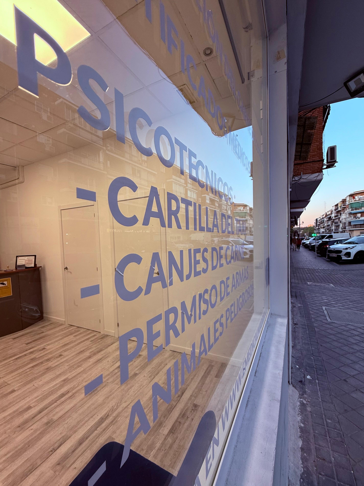

Emedical Madrid
Centro autorizado de psicotécnicos y certificados médicos en Madrid
📞 Llámanos al 613 0000 30Centro autorizado de psicotécnicos y certificados médicos en Madrid
📞 Llámanos al 613 0000 30En Emedical Madrid realizamos la renovación del carnet de conducir de forma rápida, cómoda y sin desplazamientos. En una sola visita podrás completar todo el proceso: el psicotécnico, la foto, la firma digital y la tramitación telemática con la DGT. Si lo deseas, puedes traer tu propia foto; en caso contrario, nuestro equipo la tomará con la calidad y los requisitos oficiales que exige la DGT. Al finalizar, recibirás al momento una autorización temporal para seguir conduciendo mientras llega tu nuevo permiso definitivo por correo.

Solicita tu cita previa para una atención rápida y sin esperas. Puedes consultar los horarios y disponibilidad según tu categoría o tipo de certificado. También ofrecemos renovaciones sin cita en determinados horarios según la afluencia.
En Emedical Madrid trabajamos para que la renovación de tu carnet sea inmediata, sencilla y sin complicaciones. Ven a nuestro centro autorizado por la DGT y sal con tu autorización provisional lista para conducir.
Aviso: Para comprender con el RGPD (Reglamento General de Protección de Datos) y entender que tus datos están seguros, debes leer y la política de PRIVACIDAD y los AVISOS LEGALES. Esta web cumple con el RGPD, así que todo está protegido y amparado por la ley. El uso de la web implica la aceptación de las condiciones expuestas en el aviso legal y la política de privacidad. Esta web NO USA COOKIES.